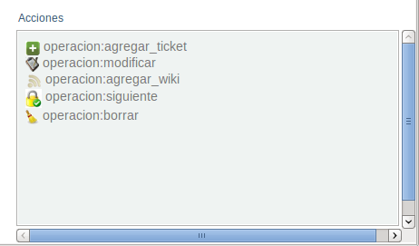
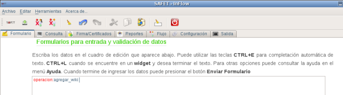
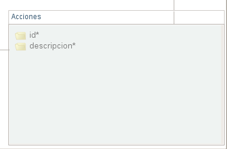
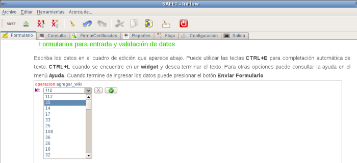
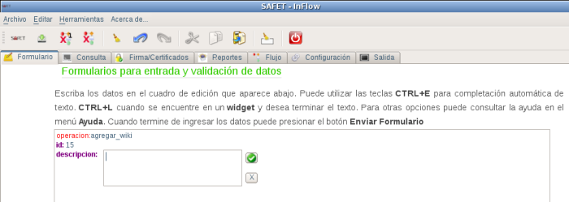

Operacion:agregar_wiki del menú inteligente (ver figura S3.1.3-1), luego en el área de cuadro de edición debe aparecer la linea de texto operacion:agregar_wiki, (ver figura S3.1.3-2) y el menú inteligente con los campos relacionados con esta operación (ver figura S3.1.3-3)

operacion:modificar
agregar_wiki
Para agregar un wiki a un ticket debe conocer el id y hacer click sobre el campo id*, debe aparecer en el área de cuadro la linea de texto operacion:id junto con un botón de selección para marcar el id del ticket que de le va agregar el wiki. (ver figura S3.1.3-4).

Una vez seleccionado el id del ticket, se procede a darle click al botón
Y para agregar el texto al wiki se procede en seleccionar del menú inteligente, el campo descripción. (Ver figura S3.1.3-5)

Luego lo que faltaría ingresar el texto que al wiki, aceptar darle click al botón
Y enviar para almacenar los cambios. Hacer click al botón enviar